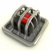
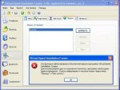

Хакинг
Статьи по хакингу, фрикингу, резёрвингу, крэкингу и защите от всего этого. Здесь же можно найти статьи по "хаку без хака", т.е. о лёгком взломе. Так же именно здесь вы можете почитать статьи о веб-взломе и хакингу ICQ.
Защита сайта от взлома
26.02.2006
В этой статье рассмотрены основные способы взлома сайтов и защиты от них. Также вы узнаете, как можно применять социальную инженерию для защиты от взлома.
Если вы хотите, чтобы ваше защита имела действительно параноидальный уровень - читайте эту статью.

Вы хотите научиться взламывать программы, но не хотите учить аcсемблер? Всегда пожалуйста! В данной статье вы научитесь легко взламывать многие программы без долгой и изнурительной подготовки.